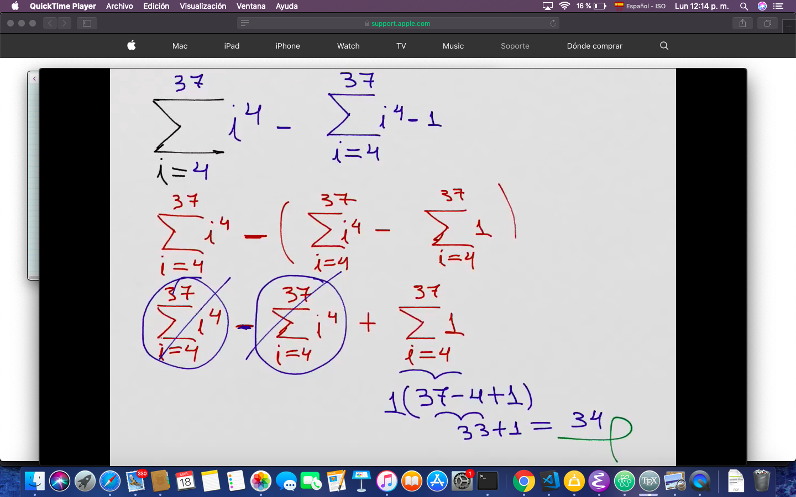

Sumas de Reimann e integrales
Table of Contents
1 Video1 : notación sigma y sus propiedades:
1.1 Sintaxis
Consideremos:
\[\sum_{i=1}^{k}a_{i} = a_{k} + a_{k + 1} + \dots + a_{n}\]
- Σ = notación sigma
- k = límite inferior
- n = límite superior
- i = índice de la sumatoria
- ai = formas que toman los sumandos
1.2 Tener en cuenta
- es la representación de una suma
- cantidades pueden ser finitas o infinitas
1.3 Propiedades
Las propiedades van a permitir manipular las sumatorias con mayor facilidad. Por ejemplo, expresar una sumatoria en términos de otras más sencillas.
Las propiedades enunciadas en el video son:
1.3.1 1) Número de términos de una sumatoria
Para
\[\sum_{i=1}^{n}a_{i} = a_{k} + a_{k + 1} + \dots + a{n}\]
\[ Número\ de\ términos = n - k + 1 \]
1.3.2 2) Para sumas y diferencias de dos o más variables:
- Se puede reescribir la sumatoria como varias sumatorias distintas
\[\sum_{i=n}^{k}(a_{i} + b_{i} - c_{i}) = \sum_{i=n}^{k}a_{i} + \sum_{i=n}^{k} b_{i} - \sum_{i=n}^{k} c_{i} \]
1.3.3 3) Sumatoria de una constante:
- Se multiplica la constante por el numero de términos de la sumatoria \[\sum_{i=n}^{k} c = c * número\ de\ términos \]
1.4 Ejemplo
\[\sum_{i=2}^{8} 3 = 3 + 3 + 3 + 3 + 3 + 3 + 3 + 3\] \[\sum_{i=2}^{8} 3 = 3 * 8 \]
No confundir con: \[\sum_{i=2}^{8} i + 3 \]
- aquí sí está en función de una variable, no es constante
1.4.1 4) Una sumatoria se puede descomponer en dós o más sumatorias parciales
\[\sum_{i=1}^{k}x_{i} = \sum_{i=1}^{n}x_{i} + \sum_{i=n+1}^{k} x_{i} \]
1.4.2 5) Sumatoria de una constante y una o más variables
\[\sum_{i=1}^{n}(ax_{i} \pm by_{i}) = a\sum_{i=1}^{n}x_{i} \pm b\sum_{i=1}^{n} y_{i} \]
- Mezcla de dos propiedades anteriores
1.5 Ejemplo
1.5.1 ¿Cuánto da esto?
- recordar \(Sn = \frac{(t1 + t2)}{2} * (número\ de\ términos)\)
1.5.2 solución
1.6 Conclusión (combinación de todas las propiedades

2 Video 2:
Gráficamente, la integral describe el área bajo la curva. Por lo tanto, puede ser escrita:
2.1 Una aproximación
\[A \approx \sum_{i=1}^{n}f(x_{i}) \Delta x \]
2.2 Una igualdad
\[A = \lim_{n\to\infty} \sum_{i=1}^{n}f(x_{i}) \Delta x \]
2.3 ¿Qué elementos de la interpretación geométrica correponden a \(f(x_{y})\) y \(\Delta x\)?
\(f(x_{i}) =\ altura \) \(\Delta x =\ ancho \)
3 Video 3: resolver una integral paso a paso
Evalúe la suma de Riemann para \[f(x) = x^3 - 6x\]
tomando los puntos extremos de la derecha con: con \(a = 0\), \(b = 3\) y \(n = 6\)
Entonces:
- lo expresamos como integral
- lo expresamos como suma de Riemann
\[\int_{a}^{b} f(x)dx = \lim_{n\to\infty} \sum_{i=1}^{n}f(x_{i}) \Delta x \]
y sabemos que
\[\Delta x = \frac{b - a}{n}\]
Si evaluamos: \[\Delta x = \frac{3 - 0}{6} = \frac{3}{6} = 0.5\]
Para este ejercicio en particular, nos dan la condición de que \(n = 6\). Son 6 particiones únicamente, no tienden a infinito. \[\int_{0}^{3} f(x)dx = \sum_{i=1}^{6}f(x_{i}) * \Delta x \]
Como el delta nos dio 0.5
\begin{equation} \begin{split} x_{1} &= 0.5 \\ x_{2} &= 1.0 \\ x_{3} &= 1.5 \\ x_{4} &= 2.0 \\ x_{5} &= 2.5 \\ x_{6} &= 3.0 \end{split} \end{equation}Entonces, si evaluamos \(f(x) = x^3 - 6x\)
\begin{equation} \begin{split} f(0.5) = (0.5)^3 - 6(0.5) &= -2.875 \\ f(1.0) = (1.0)^3 - 6(1.0) &= -5 \\ f(1.5) = (1.5)^3 - 6(1.5) &= -5.625 \\ f(2.0) = (2.0)^3 - 6(2.0) &= -4 \\ f(2.5) = (2.5)^3 - 6(2.5) &= 0.625 \\ f(3.0) = (3.0)^3 - 6(3.0) &= 9 \end{split} \end{equation}Ahora sólo nos queda reemplazar estos valores en la sumatoria. Recordemos las propiedades de la sumatoria y nos queda:
\[\sum_{i=1}^{6}f(x_{i}) * \Delta x = (-2.87 - 5 - 5.625 - 4 + 0.625 + 9)(0.5) \]
\[ aprox. = 3.9375 \]
3.1 ¿Por qué da un valor negativo?
Porque la curva está por debajo del eje de las x.
3.2 ¿Cómo se dibujan los rectángulos?
Cada valor marca su punta del lado derecho.